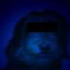
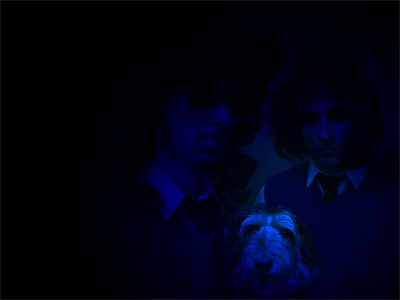

ultraвожык: біяграфія
|
 |
|
| Пётар Адамавіч |
Сабачка Ібрагім |
Яўген Шафа-Ўругвайскі |
2001: Нараджэньне UltraВожыка
UltraВожык утварыўся ў 2001 годзе па ініцыятыве сабачкі Ібрагіма, пад кіраўніцтвам якога і былі зробленыя
першыя песьні – "Лыжы" ды "Вусаты дэмакрат".
Нават самыя першыя запісы праходзілі не без прыгодаў. Так, падчас працы над "Вусатым дэмакратам"
у
студыю нечакана прыехала бабуля Пятра Адамавіча і хацела забраць усіх траіх з сабой у вёску, бульбу капаць. Ад
нечаканасьці сабачка Ібрагім нават не пасьпеў выключыць мікрафоны, і размова была запісаная, а ўжо на
наступны дзень песьню з удзелам бабулі Пятра Адамавіча можна было знайсьці на інтэрнэце.
А калі запісвалі "Лыжы", у групе пачаўся канфлікт паміж вялікім прыхільнікам Лукашэнкі сабачкам
Ібрагімам і крытыкамі ўлады Яўгенам і Пятром Адамавічам. Працаваць станавілася ўсё цяжэй. Гэта,
натуральна,
адбілася на гучаньні песьні. Мутнаватасьць "Лыжаў" можна, напэўна, растлумачыць тым, што
занепакоены канфліктам Пётар Адамавіч выпадкова падключыў гітару не да свайго ўлюбёнага ўзмацняльніка
Marshall, а да звычайнай электрычнай разэткі. Пад уздзеяннем энергічнага рытму "Лыжаў" і,
хутчэй
за ўсё, не без уплыву 220 вольтаў з вышэй названай разэткі, Пётар Адамавіч так самааддана рыфаваў, што
перакуліў столік з малаком і прывезенымі бабуляй цукеркамі. Пасьля гэтага падзеі разьвіваліся імкліва.
Раздражнёны маральным супрацьстаяньнем, сабачка Ібрагім падскочыў да Пятра Адамавіча і патрабаваў
тлумачэньняў. Але Пётар Адамавіч так энергічна граў, што абсалютна выпадкова агрэў яго гітарным грыфам
па
галаве. Сабачка Ібрагім вельмі пакрыўдзіўся і адразу пакінуў гурт. Запіс давялося дарабляць ужо без яго...
2003: Ідэалогія
Пасьля ўходу сабачкі Ібрагіма Яўгену і Пятру Адамавічу доўга не хапала ўнутранай моцы працягваць творчую дзейнасьць.
І толькі праз два гады, у самым канцы 2003 года, Вожык зноў нагадаў грамадзкасьці аб сваім
існаваньні. Зьявіліся дзьве новыя песьні – "Ідэалогія" і "Кагда я стану
прэзідзентам".
Натхнёныя ўвядзеньнем у навучальных установах Беларусі прадмету "Дзяржаўная ідэалёгія",
газавымі
спрэчкамі з саюзнай Расеяй, а таксама карумпаванасьцю бабуляў, што прадаюць семкі, сябры запісалі "Ідэалогію".
На ўсялякі выпадак, памятаючы дэструктыўныя паводзіны Пятра Адамавіча ў 2001 годзе, Шафа-Ўругвайскі
схаваў
сілавы кабель ад Адамавіцкага ўзмацняльніка, і той быў вымушаны граць без электрычнага падключэньня. Так
і
зьявілася першая unplugged-песьня UltraВожыка "Кагда я стану прэзідзентам".
У пачатку 2004 года новыя песьні былі выдадзеныя на CD разам з першымі дзьвюма, а таксама са спецыяльным
бонус-трэкам з ліку самых раньніх запісаў для сапраўдных аматараў творчасьці UltraВожыка.

2005: Атлантыда
Прыгоды UltraВожыка працягнуліся ў сакавіку 2005. Злёгку занепакоеныя недастатковым уплывам праекту
на стан беларускага грамадства, музыкі вырашылі запісаць "Атлантыду".
Для многіх "Атлантыда" зьявілася нечаканасьцю: рокава-баляднае гучаньне песьні і сур’ёзнасьць
тэксту ня вельмі падыходзілі да склаўшагася іміджу UltraВожыка як хуліганаў, жульля ды правакатараў.
Шмат
казалася пра "новы саўнд" UltraВожыка. Насамрэч, "Атлантыда" проста прадэманстравала
іншы бок UltraВожыка, новы варыянт гучаньня, якое было закладзена яшчэ ў папярэдніх песьнях.
Пётар Адамавіч з самага пачатку настойваў на мінімалізацыі кампазыцыі і наданьні ёй больш "натуральнага"
гуку. Яўген, які быў заўсёды прыхільнікам складаных кампазыцый, дзе ўжыта шмат інструментаў ды эфектаў,
спачатку ставіўся да гэтай ідэі скептычна. Але атрымалася надзвычай удала. "Атлантыда" стала
адным
з фаварытаў сэзону 2005 на "Тузіне гітоў" і прынесла гурту шмат повых прыхільнікаў. Сёньня
"Атлантыда"
распаўсюджваецца на складанках "Прэм'ер Тузін 2005" і "Песьні свабоды 2006" разам з
песьнямі іншых нячэсных гуртоў (Крама, N.R.M., Палац, Ulis і інш.)
2006: Фабрыка сноў
Галоўнай нечаканасьцю 2005 года для Вожыкаў стала вяртаньне сабачкі Ібрагіма. Пераасэнсаваўшы паздеі
папярэдніх гадоў і палітычны шлях беларускай дзяржавы, а таксама ўражаны посьпехам "Атлантыды",
сабачка вярнуўся напрыканцы сьнежня і музыкі вырашылі зноў нешта зрабіць разам.
"Фабрыка сноў" пабычыла сьвет 18 лютага 2006. Яўген, праглядзеўшы стужку "Матрыца" ды
абслухаўшыся Kraftwerk адзначыў, што і адно і другоё вельмі нагадвае сучасную Беларусь. Апошняй кропляй
натхненьня стаўся момант, калі сябры разам гледзячы БТ ды едзячы цукеркі заўважылі, што цукеркі гэтыя
вырабляюцца на некай дзяржаўнай фабрыцы пад назвай "СНОВ". "Дык яны не толькі Панараму
робяць, але й цукеркі!" - заўважыў Яўген. "Гаў!" - адказаў сабачка Ібрагім. Гэтак і
назвалі.
"Мы стараліся ўжыць старое гучаньне UltraВожыка ў новым, больш мелядычным фармаце, камбінуючы мяккую
прыгажосьць міра сноў з жорсткім ды тэхнакратычным гукам фабрыкі", - камэнтуе Пётар Адамавіч.
"Гэтая
песьня прысьвечаная ўсім тым, хто яшчэ не прачнуўся", - падсумоўвае Яўген.
Як і папярэдні Вожыкаўскі трэк, "Фабрыка сноў" выдадзена на складанках "Прэм'ер Тузін 2006"
і "Песьні Свабоды 2".
2007: Крыніца цяпла
Абураны дрэннымі паводзінамі расейцаў цягам так званага "газава-нафтавага канфлікту", сабачка
Ібрагім пераканаў сваіх калег Яўгена ды Пятра Адамавіча аб'яднацца вакол Бацькі ды адзіным фронтам даць
адпор расейскай гадзіне. У выніку была запісаная "Крыніца цяпла".
Па сваёй сутнасьці "Крыніца" адрозьніваецца ад "Атлантыды" і "Фабрыкі сноў".
Песьня атрымалася больш патрыятычнай, нясе значна больш пазітыву і ўспрымаецца лягчэй.
"Гэта падабаецца ня ўсім. Вунь, маскалі ўвогуле не разумеюць гумару", - тлумачыць сабачка
Ібрагім.
Напэўна, менавіта з гэтым звязана тое, што "Крыніца цяпла" ня трапіла на складанку "Песьні
Свабоды 3" нягледзячы на тое, што была для яе спецыяльна запісаная.
Распавядае Яўген Шафа-Ўругвайскі: "Да нас зьвярнуліся складальнікі дыску з прапановай прыняць удзел
у праекце. Але калі песьня была гатовая, было вырашана яе ў складанку не дадаваць".
"Мы ўпэўненыя, што гэта маскальскіх рук справа. Нейкаму там алігарху не спадабалася, што мы з Расеі
сьмяемся", - аналізуе сабачка Ібрагім.
"Крыніца цяпла" увайшла ў якасьці бонусу на дыск "Прэм'ер Тузін 2007", а ў сьнежні
2007
быў забіты яшчэ адзін стратэгічны цьвік у сьпіну расейскіх алігархаў - было запісана відэа да Атлантыды.
Такім чынам пабачыў сьвет першы афіцыйны кліп UltraВожыка. З нагоды стварэньня кліпу Вожыкі накапалі
архіўных матэрыялаў, вымялі пыл са свайго студыйнага мікшэру і перазьвялі арыгінальны трэк "Атлантыды".
2008
У лютым 2008 выйшаў другі афіцыйны відэакліп UltraВожыка - на гэты раз да "Фабрыкі сноў".
"Мне
вельмі падабаецца гэты кліп", - камэнтуе сабачка Ібрагім, - "Але UltraВожык не кантраляваў
стадыю
стварэньня эфектаў, і таму ніякай адказнасьці за лятаючага па экране, як марсіянін, Скарыну мы не нясем".
"Чаго з іншага боку нельга сказаць пра абваражальных дзяўчын у латэксе", - у адзін голас
дадаюць
Яўген і Пётар Адамавіч.
Астатак году Вожыкі ўсім калектывам правялі на Нарачы, рыбу лавілі.
2009: Праз касьмічныя абшары...
Да сьнежня 2008 Вожыкі налавіліся рыбы, а таксама добра задубелі ад сядзеньня на Нарачы, і таму з
энтузіязмам
узяліся за працу, калі тэлеканал БелСат прапанаваў запісаць трэк для выкарыстаньня ў якасьці тытульнай
мелёдыі. Была запісаная песьня "Спадарожнік", але тым часам ЗША ахапіў эканамічны крызіс, а
Эўразьвяз спужаўся расейскіх паходаў на Каўказ. Абодва фактары, відавочна, нядобра паўплывалі на
дабрабыт
спадарожнікавага анты-БТ, які ў выніку ня здолеў разьлічыцца з UltraВожыкам за пастаўленую прадукцыю.
Таму
Вожыкі, застаўшыся літаральна без штаноў, перарабілі песьню на свой лад, замяніўшы слова "БелСат"
на адзіны спадарожнікавы канал, які лепей за ўсё глядзець без штаноў - "Плэйбой".
"Спадарожнік" быў апублікаваны 26 траўня 2009. Гэта першая песьня UltraВожыка, у якой сабачка
Ібрагім выконвае сольную вакальную партыю.
A ўжо пад Новы год Вожыкі запісалі яшчэ адну песьню на касьмічную тэматыку. Як і іншыя творы, "Клёва
касманаўту!" закранае пытаньні і сітуацыі, блізкія кожнаму слухачу. Нехта нават сьцвярджае, нібыта
"Клёва касманаўту!" - самае пазітыўнае, што Вожыкі зрабілі да гэтага часу. Але самі музыкі ня
згодныя.
"Нас заўсёды няправільна разумеюць. Спачатку казалі, што мы быццам ня любім палітычны лад,
афіцыйныя
СМІ, манаполію - ледзьве не ўсю краіну разам з жыхарамі і хатнімі жывёламі", - кажа Пётар Адамавіч.
"Потым хтосьці вырашыў, што UltraВожык натхніўся пазітывам і пачаў запісваць аптымістычныя песьні.
Настаў час рашуча і катэгарычна дэментаваць гэтую дэзінфармацыю", - з выразам дадае Яўген.
"Насамрэч жа мы ўвогуле нікога ня любім, і пачуцця гумару ў нас няма і ніколі не было", -
тлумачыць сабачка Ібрагім.
2010: Das Дзед-Барадзед
Пасьля непрацяглага перапынку ўдзельнікі UltraВожыка ізноў сабраліся ў хаце бабулі Пятра Адамавіча,
вырашыўшы распачаць працу над новым шэдэўрам. Але бабуля гэтым разам асабліва моцна сварылася, грукатала
рондалем і ўсяляк перашкаджала творчаму працэсу, і таму было вырашана выжыць яе з хаты, падрабіўшы ёй
квіток на канцэрт Rammstein у Нью-Ёрку. Падарожжа было багатым на прыгоды, пачынаючы ад дэпартацыі ў
Мексіку праз несапраўдны квіток, гандаль зброяй у спадзеве зарабіць на самалёт дадому, вяртаньня ў бочцы
з венесуэльскай нафтай і ўрэшце дэмастрацыяй пратэсту на плошчы Незалежнасьці, дзе абураная
фальсіфікацыяй свайго квітка бабуля брутальна зьбівала АМАПаўцаў ды ламілася ў дзьверы Дома ўраду.
Тым часам быў запісаны "Das Дзед-Барадзед" - чарговая інтэрпрэтацыя знакамітай дзіцячай песенькі, якая ў
гэты раз нагадвае вядомы гіт тых самых Rammstein "Mein Herz Brennt", які таксама рабіўся са спасылкай на
персанажа з дзіцячай тэлепраграмы.
Адносіны з бабуляй давялося выпраўляць, зрабіўшы ёй прыватны канцэрт a-la Rammstein, дзе новая песьня
была адзінай. "Ёй спадабалася, але яна нас усё роўна паставіла ў куток, дзе мы дагэтуль і стаім", -
разам скардзяцца Вожыкі.
* * *
Гісторыя UltraВожыка на гэтым не заканчваецца. Мы з вамі яшчэ пабачымся. А пакуль што памятайце:
UltraВожык усіх і ўсё бачыць, і вас у тым ліку. Яго лепш не дражніць.